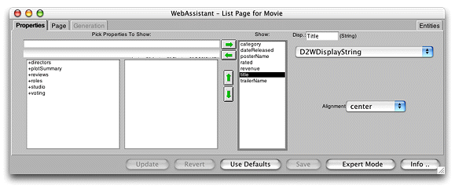

| PATH |

When the Web Assistant applet is launched, it appears in a window whose title indicates the current page and entity:
The WebAssistant has four displays, each selectable by clicking a tab:
The WebAssistant stays synchronous with your browser. When you navigate to a new page, it displays the settings for that page.
The Web Assistant has two modes, Standard mode and Expert mode. By default the Web Assistant opens in Standard mode, which lets you customize the current page in your application. When you customize a page in Standard mode, the changes apply to all occurrences of that page, and that page only. For example, if you change the order of properties in an edit page for the Movie entity, then any time a Movie edit page is displayed, those changes are in effect (provided you have clicked Update or Save). However, the changes don't apply to a Movie query, list, or inspect page; if you want to customize those in the same way, you must do so explicitly.
Using Web Assistant's Expert mode, you can customize any page in the application, regardless of whether it is currently displayed. Thus, by specifying the "*all*" setting in Expert mode, you could change all pages of a given entity at once. In addition, you can generate a template or "freeze" a page as a reusable component. For more information, see "WebAssistant Expert Mode".
When you've made changes to a page, you can use the buttons at the bottom of the WebAssistant to apply them:
The Info button displays a brief description of the currently selected Direct to Web component.
© 2001 Apple Computer, Inc.